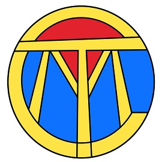

| Carissa and Patric in Seattle | |
Carissa was born in Washington and it is one of her favorite places to visit. She is a huge Seattle sports fan, especially the Seattle Seahawks. This is a picture from one of her trips to Seattle for Emerald City Comic Con. She is pictured here with her long time boyfriend and podcast/You Tube co-host Patric. |
|
| Carissa and Patric with Stan Lee | |
One item on Carissa's bucket list was meeting Stan Lee, he created many of her beloved comic characters. She is pictured here with Patric at one of the last conventions Stan Lee was at before he passed. |
|
| Tomorrow Comes Movies | |
|  | Carissa and Patric host a podcast and YouTube channel, both titled Tomorrow Comes Movies. In both of those media channels, they discuss movies, TV shows, and have had many interview with guests such as the Yuan Twins, Manu Bennet, Ming Chen, Carlos Ferro, and Paul Soter. You can visit their YouTube channel by clicking here at Tomorrow Comes Movies. |